Data Science per psicologi
2021-09-13
Capitolo 1 Distribuzione predittiva a posteriori
Oltre alla stima a posteriori degli indici sintetici del parametro e alla verifica delle ipotesi, un altro compito comune in un’analisi bayesiana è la predizione di nuovi dati futuri.
Definizione 1.1 Si chiama distribuzione predittiva a posteriori (posterior predictive distribution, PPD), la distribuzione di future osservazioni di dati, ovvero la distribuzione sui possibili dati previsti futuri \(\tilde{y}\) data la distribuzione a posteriori per \(\theta\) che è stata ottenuta. La distribuzione predittiva a posteriori \(p(\tilde{y} \mid y)\) è \[\begin{equation} p(\tilde{y} \mid y) = \int p(\tilde{y} \mid \theta) p(\theta \mid y) d\theta. \tag{1.1} \end{equation}\]
La (1.1) descrive la nostra incertezza sui dati previsti futuri, tenendo conto della scelta del modello e della stima dei parametri mediante i dati osservati.
1.1 Un esempio concreto
Consideriamo ancora il campione di pazienti clinici depressi di Zetsche, Bürkner, and Renneberg (2019). Supponiamo di volere osservare in futuro altri 20 pazienti clinici. Sia \(\tilde{y} \in \{0, 1, \dots, 20\}\) il numero di pazienti che, tra i nuovi pazienti futuri, manifestano una depressione grave. Se vogliamo fare predizioni su \(\tilde{y}\) dobbiamo iniziare a riconoscere il fatto che i valori nell’intervallo [0, 20] non hanno tutti la stessa credibilità. Infatti, \(\tilde{y}\) è una v.c. binomiale. Dunque sappiamo che \(\tilde{Y} \mid \theta \sim \Bin(20, \theta)\) con densità
\[\begin{equation} p(y'\mid \theta) = p(Y' = y' \mid \theta) = \binom{20}{y'} \theta^{y'}(1-\theta)^{20 - y'} \; . \tag{1.2} \end{equation}\]
È dunque chiaro che la v.c. \(Y'\) dipende da \(\theta\). Ma \(\theta\) è essa stessa una variabile casuale. La potenziale distribuzione a posteriori di \(\theta\), alla luce dei dati del campione osservato (\(y = 14\)), è una \(\Beta(25, 15)\) – questa distribuzione descrive la plausibilità relativa a posteriori dei valori \(\theta\). Per trovare la verosimiglianza relativa dei valori \(\tilde{y}\) per le previste future 20 osservazioni è necessario applicare la (1.1):
\[\begin{align} p(\tilde{y} \mid y = 17) = \int_0^1 p(\tilde{y} \mid \theta) p(\theta \mid y = 17) d\theta. \tag{1.3} \end{align}\]
In parole, ciò significa che dobbiamo “sommare” la funzione \(p(\tilde{y} \mid \theta)\) assegnando a \(\theta\) tutti i valori possibili in [0, 1], ponderando ciascuno di questi “addendi” con un peso corrispondente alla verosimiglianza di \(\theta\) nella distribuzione \(p(\theta \mid y = 17)\).
Per il modello binomiale con una distribuzione a priori Beta è semplice ricavare analiticamente la distribuzione predittiva a posteriori:
\[\begin{align} p(\tilde{y} \mid y) &= \int_0^1 p(\tilde{y} \mid \theta) p(\theta \mid y)\, d\theta \notag\\ &= \int_0^1 \begin{pmatrix}\tilde{n}\\\tilde{y}\end{pmatrix} \theta^{\tilde{y}} (1-\theta)^{\tilde{n}-\tilde{y}} \Beta(a+y,b+n-y) \, d\theta \notag\\ &= \begin{pmatrix}{\tilde{n}}\\\tilde{y}\end{pmatrix} \int_0^1 \theta^{\tilde{y}} (1-\theta)^{\tilde{n}-\tilde{y}} \frac{1}{B(a+y, b+n-y)}\theta^{a+y-1}(1-\theta)^{b+n-y-1}\notag\\ &= \begin{pmatrix}{\tilde{n}}\\\tilde{y}\end{pmatrix} \frac{1}{B(a+y, b+n-y)}\int_0^1 \theta^{\tilde{y}+a+y-1}(1-\theta)^{\tilde{n}-\tilde{y}+b+n-y-1}\notag\\ &= \begin{pmatrix}{\tilde{n}}\\\tilde{y}\end{pmatrix} \frac{B(\tilde{y}+a+y,b+n-y+\tilde{n}-\tilde{y})}{B(a+y, b+n-y)} \tag{1.4} \end{align}\]
Per il caso presente, otteniamo:
# Beta Binomial Predictive distribution function
# https://rpubs.com/FJRubio/BetaBinomialPred
BetaBinom <- Vectorize(
function(rp){
log_val <- lchoose(np, rp) +
lbeta(rp+a+y, b+n-y+np-rp) -
lbeta(a+y, b+n-y)
return(exp(log_val))
}
)
n <- 30; y <- 17; a <- 25; b <- 15; np <- 20
data.frame(
heads = 0:20,
pmf = BetaBinom(0:20)
) %>%
ggplot(aes(x = factor(heads), y = pmf)) +
geom_col() +
geom_text(
aes(label = round(pmf, 2), y = pmf + 0.01),
position = position_dodge(0.9),
size = 3,
vjust = 0
) +
labs(title = "Distribuzione predittiva a posteriori",
x = "y'",
y = "P(Y = y' | Data)") 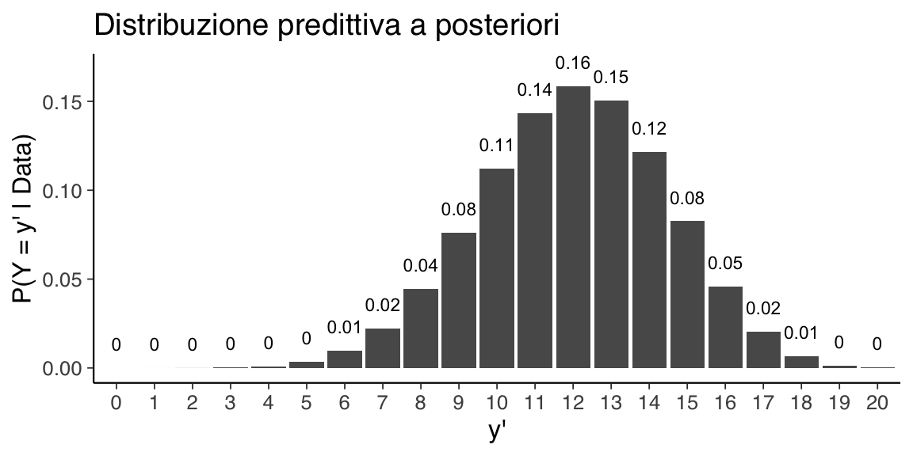
Nel caso dell’esempio che stiamo discutendo, la distribuzione predittiva a posteriori \(p(\tilde{y} \mid y)\) è simile alla distribuzione binomiale di parametro \(\theta = 0.63\) (anche se non è identica ad essa). In particolare, la \(p(\tilde{y} \mid y)\) ha una varianza maggiore di \(\Bin(\tilde{n} = 20, \theta = 0.63)\):
data.frame(
heads = 0:20,
pmf = dbinom(x = 0:20, size = 20, prob = 0.63)
) %>%
ggplot(aes(x = factor(heads), y = pmf)) +
geom_col() +
geom_text(
aes(label = round(pmf,2), y = pmf + 0.01),
position = position_dodge(0.9),
size = 3,
vjust = 0
) +
labs(title = "p(y | theta = 0.63)",
x = "y",
y = "probability") 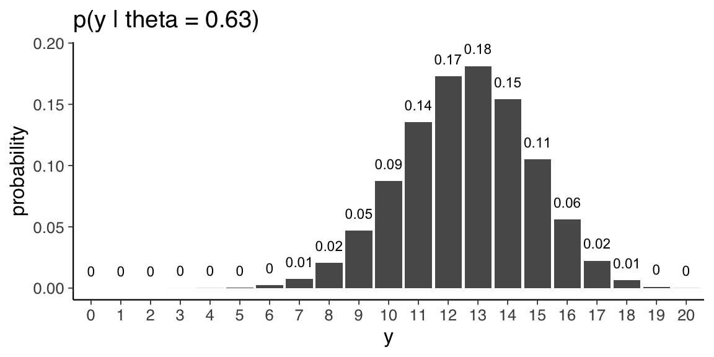
Questa maggiore varianza riflette le due fonti di incertezza che sono presenti nella (1.1): l’incertezza sul valore del parametro (descritta dalla distribuzione a posteriori) e l’incertezza dovuta alla variabilità campionaria (descritta dalla funzione di verosimiglianza).
Possiamo dunque concludere che, nel caso venissero osservati 20 nuovi pazienti clinici, il numero più plausibile di pazienti che manifestano una depressione severa (secondo il BDI-II) è 12, anche se è ragionevole aspettarsi un numero compreso, diciamo, tra 8 e 16.
Una volta trovata la distribuzione predittiva a posteriori \(p(\tilde{y} \mid y)\) diventa possibile rispondere a domande come: qual è la probabilità che almeno 10 dei 20 pazienti futuri mostrino una depressione grave, \(P(\tilde{Y} \geq 10 \mid Y = 17)\)? Oppure: quanti dei 20 pazienti futuri ci possiamo aspettare che mostrino una depressione grave, \(\E(\tilde{Y} \mid Y = 17)\)?
Rispondere a domande di questo tipo è possibile, avendo a disposizione la (1.4), ma richiede un po’ di lavoro – non ci sono funzioni R che svolgano questi calcoli per noi. Tuttavia, non è importante imparare a risolvere problemi di questo tipo perché, in generale, anche per problemi solo leggermente più complessi di quello discusso qui, non disponiamo di una espressione analitica della distribuzione predittiva a posteriori \(p(\tilde{y} \mid y)\) [come nel caso della (1.4)]. Invece, in generale è necessario fare affidamento sulla simulazione MCMC per ottenere in maniera numerica una approssimazione della distribuzione predittiva a posteriori. In tali circostanze, è molto più facile trovare risposta a domande come le precedenti.
1.2 Metodi MCMC per la distribuzione predittiva a posteriori
I Paragrafi precedenti hanno illustrato la teoria statistica alla base dell’analisi bayesiana della distribuzione a posteriori. Quando lavoriamo con modelli semplici come il modello Beta-Binomiale, possiamo implementare direttamente le teoria che sta alla base del modello, ovvero possiamo calcolare in maniera esatta gli intervalli di credibilità, le probabilità a posteriori e le proprietà della distribuzione predittiva a posteriori.
Tuttavia, espressioni analitiche che consentono una soluzione esatta ai problemi elencati sopra sono disponibili solo per modelli molto semplici, come ad esempio quello Beta-Binomiale. In generale, dobbiamo ricorrere ai metodi di campionamento MCMC per ottenere una approssimazione numerica della distribuzione a posteriori. In tali circostanze, sono stati messi a punto dei metodi che consentono di trovare una approsimazione anche della distribuzione predittiva a posteriori. Dunque, per rispondere alle domande di interesse non sarà necessario applicare delle formule ma potremo invece usare delle funzioni R.
Consideriamo nuovamente il codice Stan per una proporzione che abbiamo discusso nel Capitolo ??:
modelString = "
data {
int<lower=0> N;
int<lower=0, upper=1> y[N];
}
parameters {
real<lower=0, upper=1> theta;
}
model {
theta ~ beta(2, 2);
y ~ bernoulli(theta);
}
generated quantities {
int y_rep[N];
real log_lik[N];
for (n in 1:N) {
y_rep[n] = bernoulli_rng(theta);
log_lik[n] = bernoulli_lpmf(y[n] | theta);
}
}
"
writeLines(modelString, con = "code/oneprop1.stan")Utilizzando la notazione di Gelman, Hwang, and Vehtari (2014), chiamiamo \(y^{rep}\) i dati previsti futuri che potrebbero venire osservati se l’esperimento casuale che ha prodotto \(y\) venisse ripetuto, ovvero una realizzazione futura del modello statistico con gli stessi valori dei parametri \(\theta\) che hanno prodotto \(y\). Gelman, Hwang, and Vehtari (2014) distinguono \(y^{rep}\) (repliche sotto lo stesso modello statistico) da \(\tilde{y}\), che corrisponde invece ad un effettivo campione empirico di dati osservato in qualche futura occasione.
Quando l’analisi bayesiana viene svolta mediante metodi MCMC, una stima della distribuzione predittiva a posteriori si ottiene nel modo seguente:
- campionare \(\theta_i \sim p(\theta \mid y)\), ovvero campionare un valore del parametro dalla distribuzione a posteriori;
- campionare \(y^{rep} \sim p(y^{rep} \mid \theta_i)\), ovvero campionare il valore di un’osservazione dalla funzione di verosimiglianza condizionata al valore del parametro definito nel passo precedente.
Questo processo in due fasi riflette le due fonti di incertezza che sono presenti: l’incertezza sul valore del parametro (riflessa dalla distribuzione a posteriori) e l’incertezza dovuta alla variabilità campionaria (riflessa dalla funzione di verosimiglianza). Se i due passaggi descritti sopra vengono ripetuti un numero sufficiente di volte, l’istogramma risultante approssimerà la distribuzione predittiva a posteriori che, in teoria (ma non in pratica) potrebbe essere ottenuta per via analitica.
Le istruzioni necessarie per simulare \(y^{rep}\) (ovvero, y_rep[n] = bernoulli_rng(theta); sono state aggiunte nel blocco generated quantities del codice Stan.
I dati dell’esempio che stiamo discutendo sono:
data_list <- list(
N = 30,
y = c(rep(1, 17), rep(0, 13))
)Compiliamo il codice Stan:
file <- file.path("code", "oneprop1.stan")
mod <- cmdstan_model(file)ed eseguiamo il campionamento MCMC:
fit <- mod$sample(
data = data_list,
iter_sampling = 4000L,
iter_warmup = 2000L,
seed = SEED,
chains = 4L,
parallel_chains = 4L,
refresh = 0,
thin = 1
)
FALSE Running MCMC with 4 parallel chains...
FALSE
FALSE Chain 1 finished in 0.2 seconds.
FALSE Chain 2 finished in 0.2 seconds.
FALSE Chain 3 finished in 0.2 seconds.
FALSE Chain 4 finished in 0.1 seconds.
FALSE
FALSE All 4 chains finished successfully.
FALSE Mean chain execution time: 0.2 seconds.
FALSE Total execution time: 0.3 seconds.
Per comodità, trasformiamo l’oggetto fit in un oggetto di classe stanfit:
stanfit <- rstan::read_stan_csv(fit$output_files())L’esatta distribuzione a posteriori è una Beta(19, 15):
summarize_beta_binomial(alpha = 2, beta = 2, y = 17, n = 30)
#> model alpha beta mean mode var
#> 1 prior 2 2 0.5000000 0.5000 0.050000000
#> 2 posterior 19 15 0.5588235 0.5625 0.007043994
#> sd
#> 1 0.22360680
#> 2 0.08392851plot_beta(alpha = 19, beta = 15) +
lims(x = c(0, 1))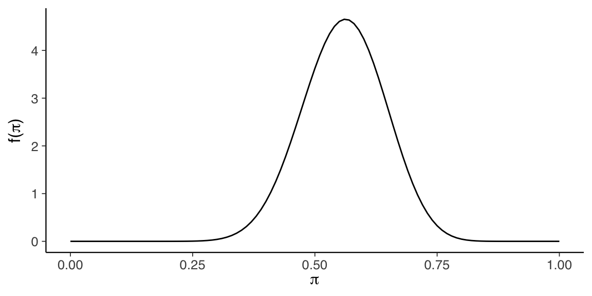
L’approssimazione della distribuzione a posteriori per \(\theta\) ottenuta mediante la simulazione MCMC è
mcmc_dens(stanfit, pars = "theta") +
lims(x = c(0, 1))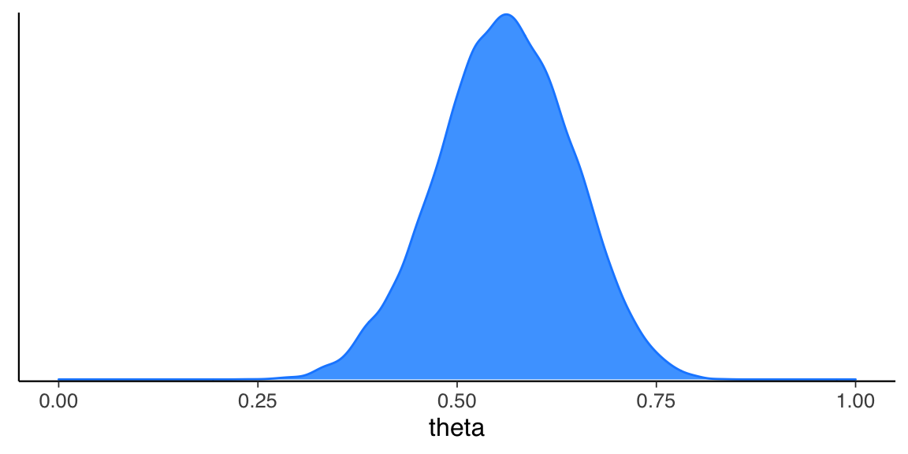
La funzione tidy() nel pacchetto broom.mixed fornisce alcune utili statistiche per i 16000 valori della catena Markov memorizzati in stanfit:
broom.mixed::tidy(
stanfit,
conf.int = TRUE,
conf.level = 0.95,
pars = "theta"
)
#> # A tibble: 1 × 5
#> term estimate std.error conf.low conf.high
#> <chr> <dbl> <dbl> <dbl> <dbl>
#> 1 theta 0.560 0.0839 0.390 0.718laddove, per esempio, la media esatta della corretta distribuzione a posteriori è
19 / (19 + 15)
#> [1] 0.5588235
La funzione tidy() non consente di calcolare altre statistiche descrittive, oltre alla media. Ma questo risultato può essere ottenuto direttamente utilizzando i valori delle catene di Markov. Iniziamo ad esaminare il contenuto dell’oggetto stanfit:
list_of_draws <- extract(stanfit)
print(names(list_of_draws))
#> [1] "theta" "y_rep" "log_lik" "lp__"Possiamo estrarre i campioni della distribuzione a posteriori nel modo seguente:
head(list_of_draws$theta)
#> [1] 0.504220 0.507240 0.597812 0.453156 0.552692 0.540191Creiamo un data.frame con le stime a posteriori \(\hat{\theta}\):
df <- data.frame(
theta = list_of_draws$theta
)Le statistiche descrittive della distribuzione a posteriori possono ora essere ottenute usando direttamente i valori \(\hat{\theta}\):
df %>%
summarize(
post_mean = mean(theta),
post_median = median(theta),
post_mode = sample_mode(theta),
lower_95 = quantile(theta, 0.025),
upper_95 = quantile(theta, 0.975)
)
#> post_mean post_median post_mode lower_95 upper_95
#> 1 0.5593925 0.560318 0.5621779 0.3895725 0.7184689È anche possibile calcolare, ad esempio, la probabilità di \(\hat{\theta} > 0.5\):
df %>%
mutate(exceeds = theta > 0.50) %>%
janitor::tabyl(exceeds)
#> exceeds n percent
#> FALSE 3824 0.239
#> TRUE 12176 0.761Occupiamoci ora della distribuzione predittiva a posteriori.
Usando l’oggetto stanfit creiamo y_bern:
y_bern <- list_of_draws$y_rep
dim(y_bern)
#> [1] 16000 30
head(y_bern)
#>
#> iterations [,1] [,2] [,3] [,4] [,5] [,6] [,7] [,8] [,9]
#> [1,] 0 0 0 0 0 1 1 1 1
#> [2,] 1 1 1 1 0 1 1 0 1
#> [3,] 1 1 0 1 1 1 1 1 0
#> [4,] 0 0 1 0 0 0 0 0 0
#> [5,] 0 1 1 0 0 1 1 0 0
#> [6,] 1 1 1 1 1 1 0 1 1
#>
#> iterations [,10] [,11] [,12] [,13] [,14] [,15] [,16] [,17]
#> [1,] 1 1 0 1 0 0 1 1
#> [2,] 0 1 0 1 0 0 0 0
#> [3,] 0 0 1 1 1 0 0 1
#> [4,] 0 1 1 1 1 1 0 1
#> [5,] 1 0 0 1 1 1 0 0
#> [6,] 1 1 1 1 0 1 1 1
#>
#> iterations [,18] [,19] [,20] [,21] [,22] [,23] [,24] [,25]
#> [1,] 1 0 1 1 1 0 0 1
#> [2,] 1 0 1 0 1 1 0 0
#> [3,] 1 1 0 1 1 1 0 0
#> [4,] 1 1 1 0 1 1 0 0
#> [5,] 1 1 0 0 1 1 0 0
#> [6,] 0 1 0 1 0 1 1 0
#>
#> iterations [,26] [,27] [,28] [,29] [,30]
#> [1,] 1 1 1 1 1
#> [2,] 0 0 1 0 0
#> [3,] 1 1 0 1 0
#> [4,] 0 0 1 0 1
#> [5,] 1 0 1 1 1
#> [6,] 0 1 1 0 0Dato che il codice Stan definisce un modello per i dati grezzi (ovvero, per ciascuna singola prova Bernoulliana del campione), ogni riga di y_bern include 30 colonne, ciascuna delle quali è una stima di un nuovo futuro valore possibile \(y_i, \in \{0, 1\}\). Per ottenere y_rep, ovvero, il numero previsto di “successi” in nuove future \(N = 30\) prove è sufficiente calcolare la somma dei valori di ciascuna riga. Ripetendo questa operazione per tutte le 16000 righe otteniamo una stima della distribuzione predittiva a posteriori:
data.frame(y_rep = rowSums(y_bern)) %>%
ggplot(aes(x = y_rep)) +
stat_count()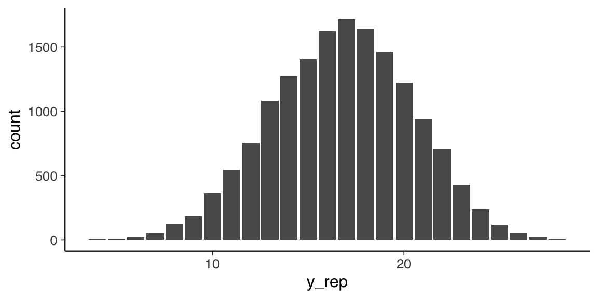
1.2.1 Posterior predictive checks
La distribuzione predittiva a posteriori viene utilizzata per eseguire i cosiddetti Posterior Predictive Checks (PPC). I PPC vengono utilizzati per valutare l’accuratezza predittiva del modello, ovvero per confrontare con metodi grafici la distribuzione dei dati osservati \(y\) con la stima della distribuzione predittiva a posteriori \(p(y^{rep} \mid y)\). Confrontando visivamente gli aspetti chiave dei dati previsti futuri \(y^{rep}\) e dei dati osservati \(y\) possiamo determinare rapidamente se il modello è adeguato. Se il modello si adatta bene ai dati, allora la distribuzione di \(y^{rep}\) è molto simile alla distribuzione dei dati osservati. Con altre parole, i dati osservati devono sembrare plausibili alla luce della distribuzione predittiva a posteriori.
Oltre al confronto tra le distribuzioni di \(y\) e \(y^{rep}\) è anche possibile un confronto tra la distribuzione di varie statistiche descrittive, i cui valori sono calcolati su diversi campioni \(y^{rep}\), e le corrispondenti statistiche descrittive calcolate sui dati osservati. Vengono solitamente considerate statistiche descrittive quali la media, la varianza, la deviazione standard, il minimo o il massimo. Ma confronti di questo tipo sono possibili per qualunque statistica descrittiva. Questi confronti sono appunto chiamati PPC.
Per l’esempio presente, una volta eseguito il campionamento MCMC e ottenuto un oggetto di classe stanfit, è possibile usare le funzionalità del pacchetto bayesplot per eseguire i PPC. Nel caso presente, il campione di dati ha dimensioni esigue, per cui i PPC rifletteranno la grande incertenzza dell’inferenza.
Dall’oggetto stanfit così trovato estraiamo \(y^{rep}\):
y_rep <- as.matrix(stanfit, pars = "y_rep")
dim(y_rep)
#> [1] 16000 30Qui sotto esaminiamo la distribuzione \(y\) insieme alla distribuzione di 8 campioni \(y^{rep}\):
ppc_hist(data_list$y, y_rep[1:8, ], binwidth = 1)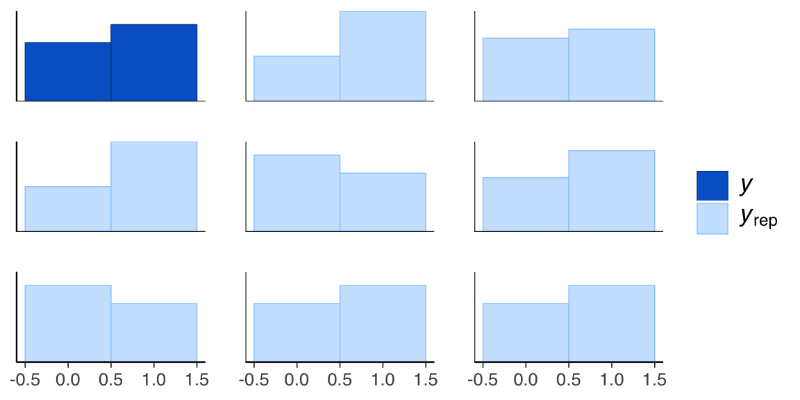
Vediamo che la corrispondenza tra le due distribuzioni, \(y\) e \(y^{rep}\), è solo parziale.
Il confronto è più facile se sovrapponiamo graficamente la funzione di densità empirica di \(y\) e quella di un insieme di campioni \(y^{rep}\) (qui 50):
ppc_dens_overlay(data_list$y, y_rep[1:50, ])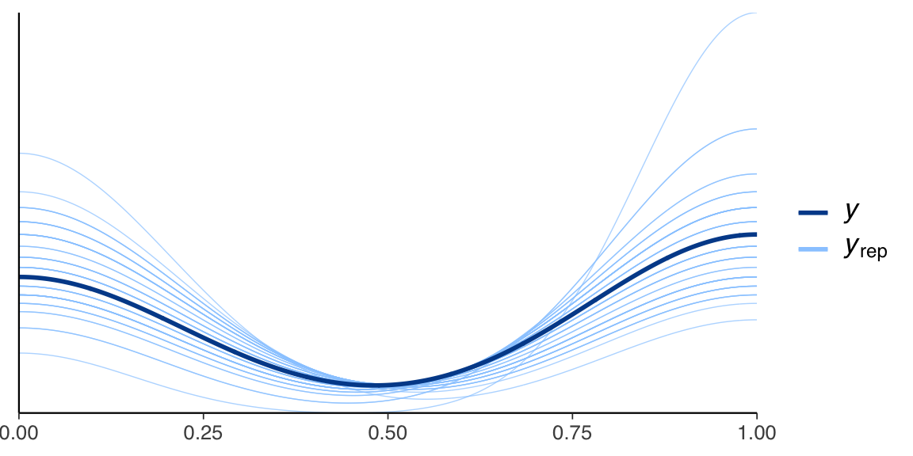
Anche qui vediamo che c’è una corrispondenza solo approssimativa tra la funzione di densità empirica di \(y\) e quella di un insieme di campioni \(y^{rep}\) – ciò è dovuto al fatto che il campione è molto piccolo.
La distribuzione predittiva a posteriori è comunque in grado di rappresentare accuratamente la media di \(y\):
ppc_stat(data_list$y, y_rep, stat = "mean")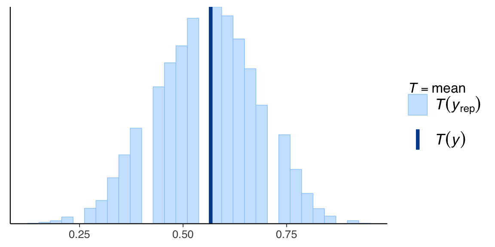
Lo stesso si può dire della varianza:
ppc_stat(data_list$y, y_rep, stat = "var")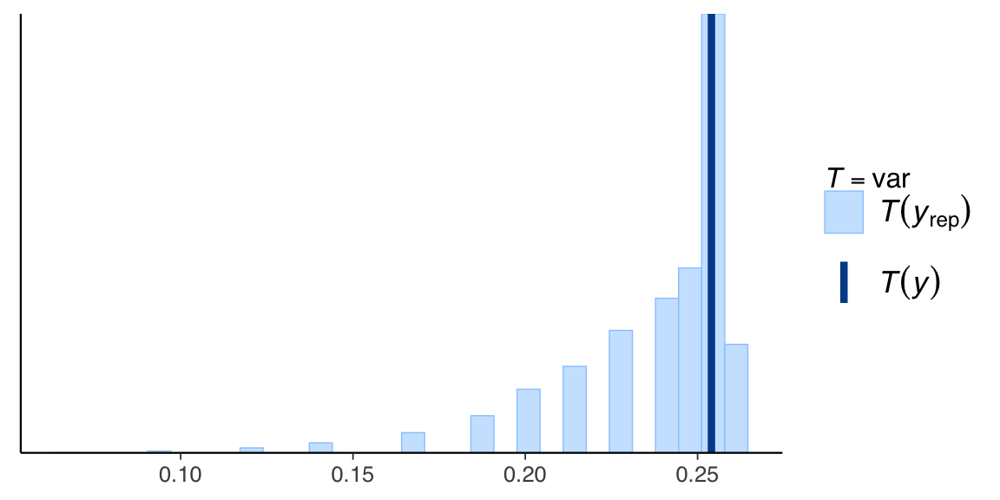
Nell’esempio successivo vedremo come i PPC possano fornirci delle indicazioni sulla mancanza di adattamento del modello ai dati quando viene considerato un campione più grande.
1.2.2 PPC per il modello di Poisson
Le istruzioni R fornite qui sotto sono state recuperate dalla seguente pagina web. Nell’esempio discusso da Jonah Gabry e Aki Vehtari vengono usati i seguenti dati:
y <- c(0L, 3L, 5L, 0L, 4L, 7L, 4L, 2L, 3L,
6L, 7L, 0L, 0L, 3L, 7L, 5L, 5L, 0L,
4L, 0L, 4L, 4L, 6L, 3L, 7L, 5L, 3L,
0L, 0L, 2L, 0L, 1L, 0L, 1L, 5L, 4L,
4L, 2L, 3L, 6L, 4L, 5L, 0L, 7L, 7L,
4L, 4L, 4L, 0L, 6L, 1L, 5L, 6L, 5L,
6L, 7L, 3L, 6L, 2L, 3L, 0L, 2L, 0L,
6L, 6L, 0L, 3L, 4L, 4L, 5L, 5L, 0L,
5L, 7L, 5L, 5L, 6L, 4L, 2L, 3L, 4L,
6L, 4L, 6L, 6L, 4L, 0L, 6L, 5L, 5L,
7L, 0L, 1L, 6L, 7L, 0L, 5L, 0L, 0L,
5L, 6L, 5L, 1L, 0L, 7L, 1L, 2L, 6L,
5L, 4L, 0L, 4L, 0L, 4L, 4L, 6L, 3L,
0L, 0L, 3L, 3L, 4L, 2L, 5L, 3L, 4L,
3L, 2L, 5L, 2L, 4L, 4L, 0L, 2L, 7L,
5L, 7L, 5L, 5L, 7L, 7L, 0L, 4L, 6L,
0L, 4L, 6L, 7L, 4L, 0L, 4L, 1L, 5L,
0L, 3L, 5L, 7L, 6L, 0L, 5L, 5L, 6L,
7L, 6L, 7L, 3L, 4L, 3L, 7L, 7L, 2L,
5L, 4L, 5L, 5L, 0L, 6L, 2L, 4L, 5L,
4L, 0L, 0L, 5L, 5L, 7L, 7L, 0L, 3L,
0L, 3L, 3L, 6L, 1L, 4L, 2L, 0L, 4L,
7L, 5L, 5L, 0L, 3L, 7L, 0L, 6L, 6L,
4L, 1L, 6L, 7L, 6L, 0L, 3L, 6L, 4L,
7L, 0L, 5L, 5L, 4L, 0L, 0L, 2L, 4L,
6L, 0L, 5L, 0L, 2L, 7L, 2L, 7L, 5L,
4L, 6L, 2L, 4L, 0L, 4L, 0L, 0L, 3L,
5L, 4L, 3L, 5L, 5L, 7L, 7L, 0L, 6L,
4L, 5L, 1L, 5L, 3L, 5L, 5L, 5L, 0L,
2L, 7L, 6L, 2L, 3L, 2L, 5L, 4L, 7L,
6L, 7L, 3L, 3L, 4L, 4L, 6L, 4L, 6L,
7L, 1L, 5L, 6L, 3L, 3L, 6L, 3L, 4L,
0L, 7L, 0L, 3L, 6L, 5L, 0L, 0L, 0L,
5L, 4L, 4L, 0L, 4L, 7L, 5L, 5L, 3L,
3L, 0L, 0L, 5L, 4L, 0L, 7L, 6L, 0L,
6L, 2L, 0L, 6L, 1L, 0L, 4L, 0L, 4L,
3L, 0L, 4L, 5L, 5L, 7L, 6L, 6L, 5L,
4L, 7L, 0L, 6L, 4L, 7L, 7L, 5L, 0L,
1L, 4L, 7L, 6L, 4L, 5L, 4L, 7L, 2L,
5L, 2L, 6L, 3L, 2L, 7L, 4L, 3L, 4L,
6L, 6L, 6L, 6L, 7L, 1L, 0L, 0L, 7L,
7L, 4L, 2L, 4L, 5L, 5L, 7L, 4L, 1L,
7L, 6L, 5L, 6L, 5L, 4L, 0L, 0L, 7L,
0L, 0L, 5L, 6L, 6L, 3L, 6L, 0L, 0L,
0L, 4L, 4L, 3L, 0L, 7L, 5L, 4L, 2L,
7L, 0L, 4L, 0L, 0L, 2L, 4L, 5L, 0L,
4L, 2L, 5L, 2L, 0L, 6L, 6L, 3L, 6L,
0L, 2L, 5L, 0L, 0L, 0L, 6L, 0L, 0L,
6L, 5L, 4L, 6L, 4L, 5L, 5L, 4L, 0L,
3L, 4L, 3L, 3L, 5L, 3L, 4L, 5L, 7L,
0L, 0L, 1L, 4L, 6L, 3L, 5L, 7L, 6L,
6L, 5L, 0L, 5L, 4L, 0L, 0L, 2L, 6L,
0L, 6L, 0L, 4L, 5L, 6L, 3L, 4L, 2L,
3L, 4L, 0L, 5L, 0L, 0L, 0L, 0L, 3L,
4L, 7L, 6L, 7L, 7L, 3L, 4L, 4L, 7L,
4L, 5L, 2L, 5L, 6L)
N <- length(y)Per questi dati sembra appropriato un modello di Poisson.
qplot(y)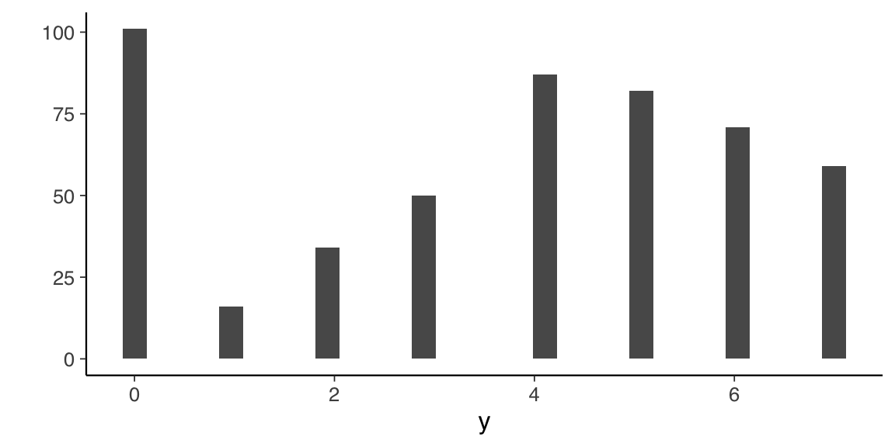
Un istogramma di un campione casuale della stessa ampiezza di \(y\) tratto dalla distribuzione di Poisson è il seguente:
x <- rpois(N, mean(y))
qplot(x)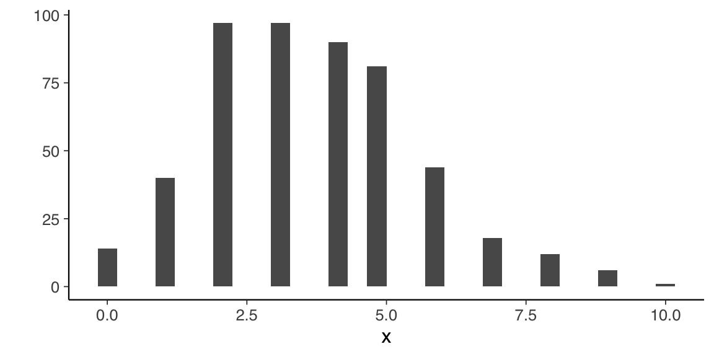
È chiaro che i due istogrammi sono molto diversi.
plotdata <- data.frame(
value = c(y, x),
variable = rep(c("Dati osservati", "Dati dalla distribuzione\n di Poisson"), each = N)
)
ggplot(plotdata, aes(x = value, color = variable)) +
geom_freqpoly(binwidth = 0.5) +
scale_x_continuous(name = "", breaks = 0:max(x,y)) +
scale_color_manual(name = "", values = c("gray30", "purple"))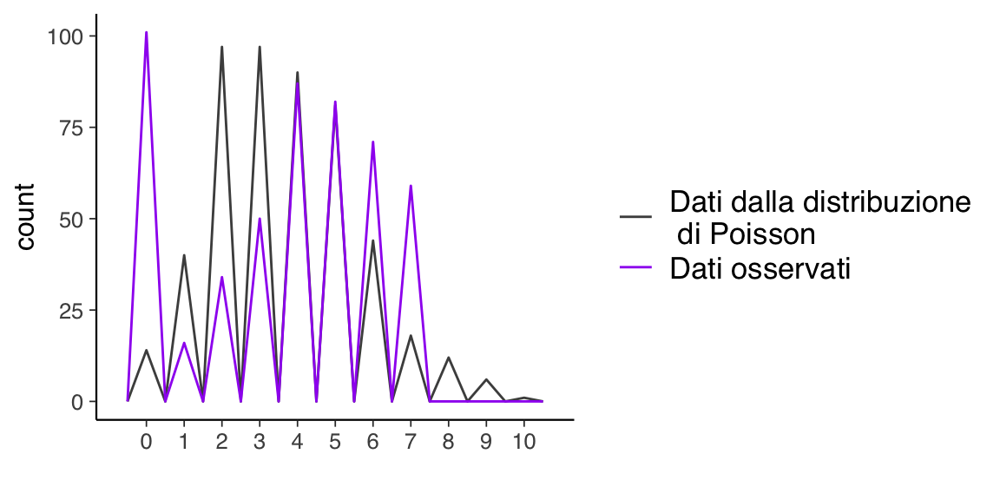
Anche se già sospettiamo che non sarà un buon modello per questi dati, è comunque una buona idea iniziare adattando ai dati il modello più semplice, ovvero quello di Poisson. Partendo da lì possiamo poi cercare di capire in che modo il modello è inadeguato.
modelString <- "
data {
int<lower=1> N;
int<lower=0> y[N];
}
parameters {
real<lower=0> lambda;
}
model {
lambda ~ exponential(0.2);
y ~ poisson(lambda);
}
generated quantities {
int y_rep[N];
for (n in 1:N) {
y_rep[n] = poisson_rng(lambda);
}
}
"
writeLines(modelString, con = "code/code_poisson.stan")
Creiamo un oggetto di tipo list dove inserire i dati:
data_list <- list(
y = y,
N = length(y)
)Adattiamo il modello ai dati:
file <- file.path("code", "code_poisson.stan")
mod <- cmdstan_model(file)
fit <- mod$sample(
data = data_list,
iter_sampling = 4000L,
iter_warmup = 2000L,
seed = SEED,
chains = 4L,
parallel_chains = 4L,
refresh = 0,
thin = 1
)
#> Running MCMC with 4 parallel chains...
#>
#> Chain 1 finished in 0.9 seconds.
#> Chain 2 finished in 0.9 seconds.
#> Chain 3 finished in 0.9 seconds.
#> Chain 4 finished in 0.9 seconds.
#>
#> All 4 chains finished successfully.
#> Mean chain execution time: 0.9 seconds.
#> Total execution time: 1.0 seconds.In questo modo otteniamo la seguente stima del parametro \(\lambda\):
fit$summary(c("lambda"))
#> # A tibble: 1 × 10
#> variable mean median sd mad q5 q95 rhat
#> <chr> <dbl> <dbl> <dbl> <dbl> <dbl> <dbl> <dbl>
#> 1 lambda 3.66 3.66 0.0830 0.0831 3.53 3.80 1.00
#> # … with 2 more variables: ess_bulk <dbl>, ess_tail <dbl>Confrontiamo \(\lambda\) con la media di \(y\):
mean(y)
#> [1] 3.662Il modello trova la media giusta, ma, come vedremo nel seguito, il modello non è comunque adeguato a prevedere le altre proprietà di \(y\).
Trasformiamo l’oggetto fit in un oggetto stanfit:
stanfit <- rstan::read_stan_csv(fit$output_files())La distribuzione a posteriori di \(\lambda\) è
lambda_draws <- as.matrix(stanfit, pars = "lambda")
mcmc_areas(lambda_draws, prob = 0.95) # color 95% interval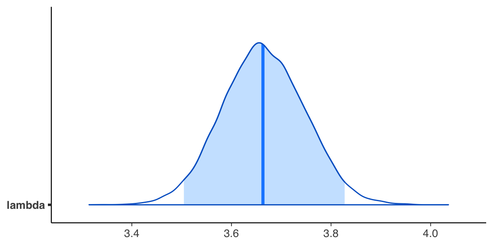
Estraiamo \(y^{rep}\) dall’oggetto stanfit:
y_rep <- as.matrix(stanfit, pars = "y_rep")
dim(y_rep)
#> [1] 16000 5001.2.2.1 Confronto tra l’istogramma di \(y\) e gli istogrammi di diversi campioni \(y^{rep}\)
ppc_hist(y, y_rep[1:8, ], binwidth = 1)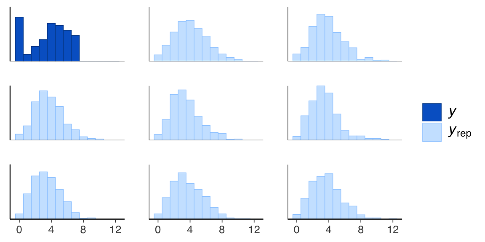
1.2.2.2 Confronto tra la funzione di densità empirica di \(y\) e quella di diversi campioni \(y^{rep}\)
ppc_dens_overlay(y, y_rep[1:50, ])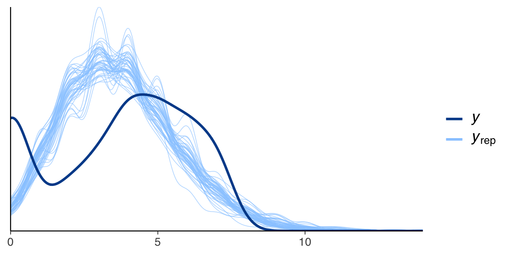
1.2.2.3 PPC per la media e la deviazine standard
ppc_stat_2d(y, y_rep, stat = c("mean", "sd"))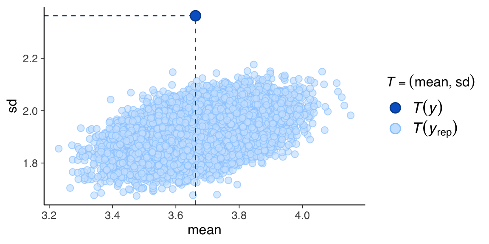
Mentre la media viene riprodotta accuratamente dal modello (come avevamo visto sopra), ciò non è vero per la deviazione stanard dei dati. La domanda è quale sia l’origine di questa mancanza di adattamento.
1.2.2.4 Confronto tra la proporzione di zeri in \(y\) e nei campioni \(y^{rep}\)
prop_zero <- function(x) mean(x == 0)
print(prop_zero(y))
#> [1] 0.202ppc_stat(y, y_rep, stat = "prop_zero")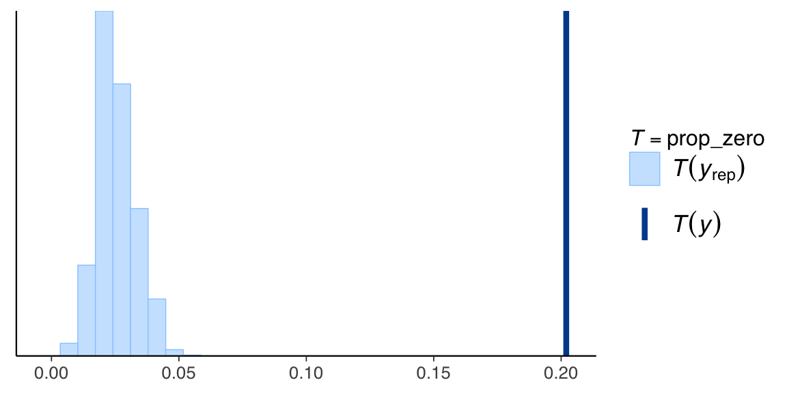
Da questo PPC risulta chiaro che il modello non è assolutamente in grado di catturare la proporzione di casi nei quali la variabile \(Y\) assume il valore 0. In altri termini, i dati presentano un’inflazione di valori 0 rispetto a quelli che sono previsti da un modello di Poisson. Questo è un problema che si verifica spesso nei dati empirici.
1.2.2.5 Poisson “hurdle” model
Per ovviare il problema corrispondente all’inflazione di valori pari a 0, è possibile definire un modello di tipo “hurdle” che consente la presenza di una proporzione di valori pari a 0 maggiore di quanto normalmente previsto dalla distribuzione di Poisson. Senza entrare nei dettagli di come questo viene fatto, Gabry e Vehtari definiscono il seguente modello:
modelString2 <- "
data {
int<lower=1> N;
int<lower=0> y[N];
}
transformed data {
int U = max(y); // upper truncation point
}
parameters {
real<lower=0,upper=1> theta; // Pr(y = 0)
real<lower=0> lambda; // Poisson rate parameter (if y > 0)
}
model {
lambda ~ exponential(0.2);
for (n in 1:N) {
if (y[n] == 0) {
target += log(theta); // log(Pr(y = 0))
} else {
target += log1m(theta); // log(Pr(y > 0))
y[n] ~ poisson(lambda) T[1,U]; // truncated poisson
}
}
}
generated quantities {
real log_lik[N];
int y_rep[N];
for (n in 1:N) {
if (bernoulli_rng(theta)) {
y_rep[n] = 0;
} else {
int w; // temporary variable
w = poisson_rng(lambda);
while (w == 0 || w > U)
w = poisson_rng(lambda);
y_rep[n] = w;
}
if (y[n] == 0) {
log_lik[n] = log(theta);
} else {
log_lik[n] = log1m(theta)
+ poisson_lpmf(y[n] | lambda)
- log_diff_exp(poisson_lcdf(U | lambda),
poisson_lcdf(0 | lambda));
}
}
}
"
writeLines(modelString2, con = "code/code_poisson_hurdle.stan")Adattiamo il modello ai dati:
file2 <- file.path("code", "code_poisson_hurdle.stan")
mod2 <- cmdstan_model(file2)
fit2 <- mod2$sample(
data = data_list,
iter_sampling = 4000L,
iter_warmup = 2000L,
seed = SEED,
chains = 4L,
parallel_chains = 4L,
refresh = 0,
thin = 1
)
#> Running MCMC with 4 parallel chains...
#>
#> Chain 1 finished in 11.0 seconds.
#> Chain 2 finished in 11.4 seconds.
#> Chain 3 finished in 11.2 seconds.
#> Chain 4 finished in 11.4 seconds.
#>
#> All 4 chains finished successfully.
#> Mean chain execution time: 11.3 seconds.
#> Total execution time: 11.8 seconds.In questo caso otteniamo una stima di \(\lambda\) diversa da quella ottenuta in precedenza:
fit2$summary(c("lambda", "theta"))
#> # A tibble: 2 × 10
#> variable mean median sd mad q5 q95 rhat
#> <chr> <dbl> <dbl> <dbl> <dbl> <dbl> <dbl> <dbl>
#> 1 lambda 5.30 5.30 0.162 0.162 5.04 5.57 1.00
#> 2 theta 0.203 0.203 0.0179 0.0179 0.174 0.233 1.00
#> # … with 2 more variables: ess_bulk <dbl>, ess_tail <dbl>Il parametro \(\theta\) viene usato per modellizzare l’eccesso di valori 0.
1.2.2.6 Confronto tra le distribuzioni a posteriori di \(\lambda\) per i due modelli
stanfit2 <- rstan::read_stan_csv(fit2$output_files())lambda_draws2 <- as.matrix(stanfit2, pars = "lambda")
lambdas <- cbind(lambda_fit1 = lambda_draws[, 1],
lambda_fit2 = lambda_draws2[, 1])
mcmc_areas(lambdas, prob = 0.95) # color 95% interval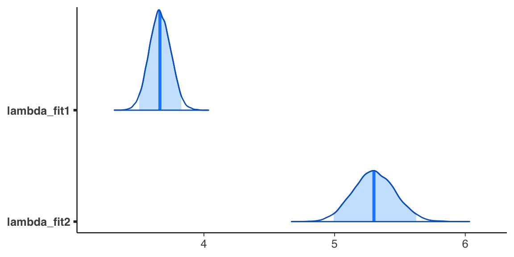
1.2.2.7 Posterior predictive checks
Rifacciamo i grafici esaminati in precedenza (e alcuni altri), ma questa volta eatraendo \(y^{rep}\) da fit2:
y_rep2 <- as.matrix(stanfit2, pars = "y_rep")
ppc_hist(y, y_rep2[1:8, ], binwidth = 1)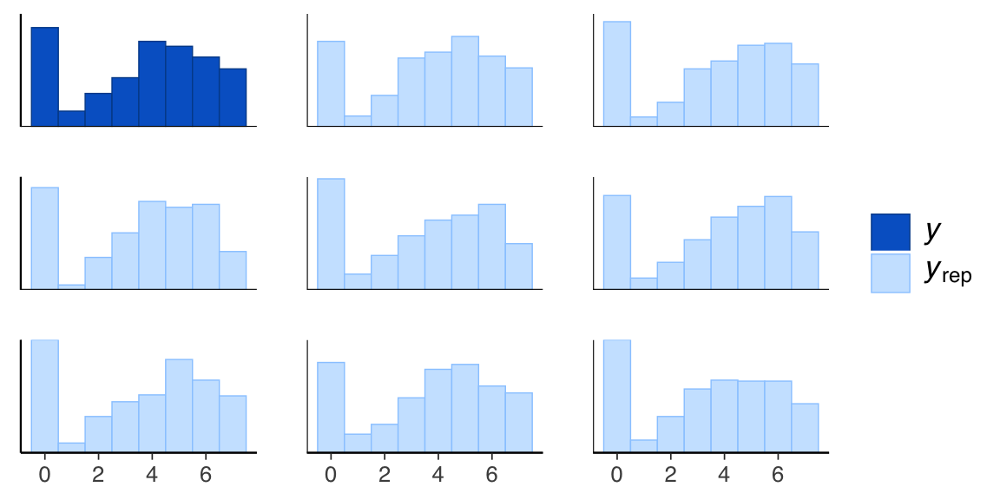
In questo caso la distribuzione di \(y^{rep}\) è molto simile alla distribuzione di \(y\).
ppc_dens_overlay(y, y_rep2[1:50, ])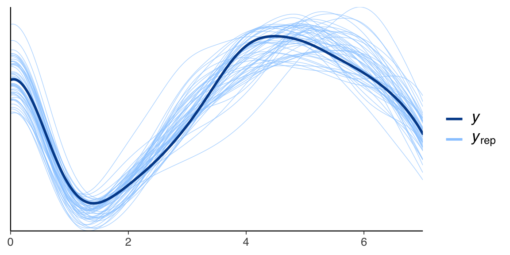
ppc_stat(y, y_rep2, stat = "prop_zero")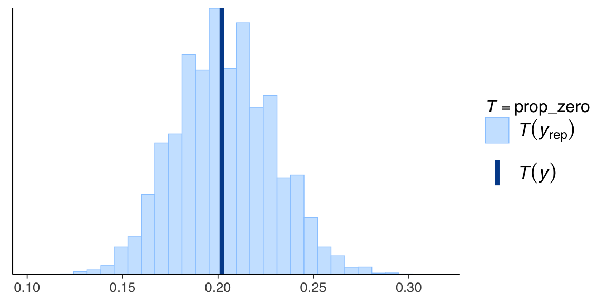
ppc_stat_2d(y, y_rep2, stat = c("mean", "sd"))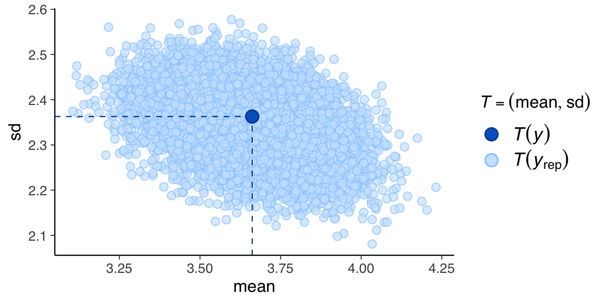
In conclusione, l’accuratezza predittiva del modello “hurdle” è chiaramente migliore di quella del modello di Poisson.
Considerazioni conclusive
Questo capitolo abbiamo discusso i controlli predittivi a posteriori. A questo proposito è necessario notare un punto importante: i controlli predittivi a posteriori, quando suggeriscono un buon adattamento del modello alle caratterische dei dati previsti futuri \(y^{rep}\), non forniscono una forte evidenza della capacità del modello di generalizzarsi a nuovi campioni di dati. Infatti, una tale evidenza sulla generalizzabilità del modello può essere solo fornita da studi di cross-validation, ovvero da studi nei quali viene utilizzato un nuovo campione di dati. D’altra parte, invece, se i PPC mostrano un cattivo adattamento del modello ai dati previsti futuri, questo fornisce una forte evidenza di una errata specificazione del modello.